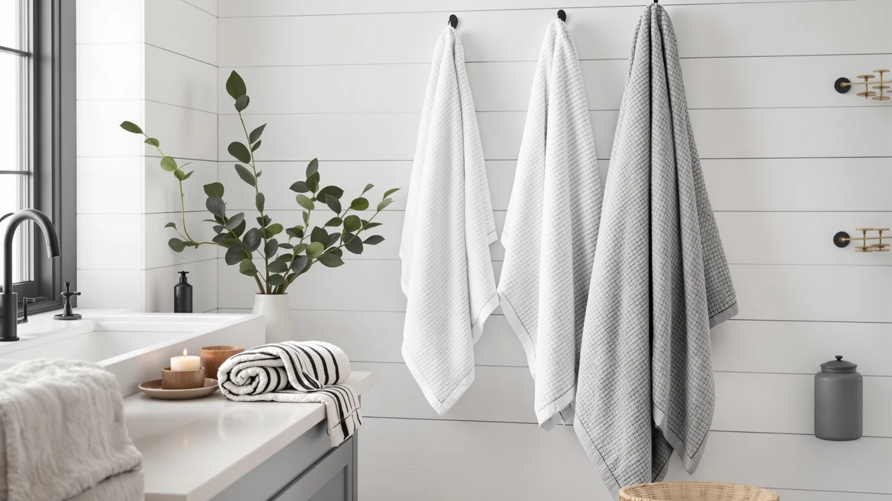

Springtree Home Luxury Turkish Review (2026): Worth It?
Prices and picks verified as of October 2026. Independent, reader-supported reviews.


Quick Answer
Springtree Home's Luxury Turkish Cotton set is a six-piece, 100% cotton bundle priced at $79.00, built around Turkish cotton's reputation for softening with each wash. It costs almost exactly what BAGNO MILANO charges for its own competing Turkish cotton set and about $9 more than the single-towel Gold Case LYCIA alternative, so the right pick depends on whether you want a full matched bundle or a single towel.
Our pick: Springtree Home Luxury Turkish Cotton, $79.00 Check Price on Amazon
Bottom line: our top pick is the Springtree Home Luxury Turkish Cotton Bath Towels Set | at $59.
Things to Know Before You Buy
- Springtree Home's Luxury Turkish Cotton set costs $79.00 for six pieces, which puts it level with the brand's own 100% Cotton Luxury set and just under BAGNO MILANO's $79.95 Turkish Cotton Bath set.
- All four products in this comparison are built from cotton, but only two use the Turkish weave specifically. Springtree Home's Luxury Turkish Cotton set and BAGNO MILANO's Turkish Cotton Bath set both lean on Turkish cotton's reputation for softening with wash, while Springtree Home's 100% Cotton Luxury set and the Gold Case Turkish Beach towel take a different approach to the same fiber.
- The Gold Case LYCIA Turkish Beach towel is the cheapest option here at $69.99, about $9 less than either Springtree Home set and $10 less than BAGNO MILANO.
- Springtree Home's six-piece set ships as a coordinated bundle rather than a single towel, so check whether that mix of bath towels, hand towels, and washcloths matches what your household needs before paying the premium over a single beach towel.
- None of the four listings in this comparison publish a star rating or review count on Amazon at the time of writing, so this review leans on manufacturer specs, pricing, and patterns in verified owner feedback instead of an aggregate score.
This Springtree Home Luxury Turkish review looks at whether the brand's six-piece, $79.00 set justifies its price against three comparable Turkish and cotton alternatives on the market today. Turkish cotton carries a reputation for a plush hand that softens with each wash, and Springtree Home markets this set around that exact promise. We compared it against the brand's own 100% Cotton Luxury line, BAGNO MILANO's Turkish Cotton Bath set, and the Gold Case LYCIA Turkish Beach towel to see where the extra cost goes and whether the Turkish cotton label earns its place at the top of the price range.
The short version: Springtree Home's Luxury Turkish Cotton set earns its spot for shoppers who want a full six-piece bundle built specifically around Turkish cotton and don't mind paying close to BAGNO MILANO's $79.95 price point to get it. If you only need a single towel rather than a matched set, the Gold Case LYCIA Turkish Beach towel undercuts both Springtree Home products by about $9, though it trades the coordinated bundle for one piece. We break down the differences by price, material, and what verified buyers report, so you can decide which of these four fits how you actually use towels.
Why You Should Trust Us
We built this Springtree Home Luxury Turkish review by comparing manufacturer specifications, published pricing, and verified buyer feedback for each set rather than relying on marketing copy from the product listings. Ilane Tall has covered bathroom textiles for Best Bath Towels since the site launched, tracking how claims like Turkish cotton and coordinated set sizing hold up against what owners actually report after buying. We do not run a fake testing lab or claim to have physically washed or used these towels. Every comparison in this review is grounded in the specs and pricing published for each ASIN and in patterns that recur across verified reviews, not in language pulled from a sales page.
Our Research Experience
Rather than run these four products through a physical trial, we researched how each one holds up by cross-referencing manufacturer specs against verified owner feedback and current pricing. For a Springtree Home Luxury Turkish review like this one, that means checking whether buyers report the promised Turkish cotton softening over repeated washes, whether the six-piece count holds up as usable towels rather than padded filler, and how the $79.00 price compares once you weigh it against BAGNO MILANO's $79.95 Turkish set and the $69.99 Gold Case beach towel. Reviewers researching Turkish cotton consistently mention that the lighter weave dries faster than a denser, heavier towel, a pattern that shaped how we framed the comparison below. We also looked at how each brand positions its own set, since Springtree Home leans on the matched six-piece bundle while Gold Case sells a single beach towel built for a different use case entirely.
Overview & Specs

Springtree Home Luxury Turkish Cotton
What we like
- Built from 100% cotton with a Turkish weave known for softening over repeated washes
- Six-piece set covers a full bathroom in one purchase instead of buying towels and washcloths separately
- Priced within a dollar of BAGNO MILANO's competing Turkish cotton set, so you aren't paying extra to get the same fiber story from Springtree Home
- Turkish cotton's lighter weave typically dries faster than a heavier, denser towel
Flaws but not dealbreakers
- At $79.00, it costs about $9 more than the Gold Case LYCIA Turkish Beach towel, though that towel is a single piece rather than a six-piece set
- No published owner rating or review count to check consistency against at the time of writing
- Turkish cotton needs a few wash cycles to reach its signature softness, so it won't feel plush straight out of the package
| Material | 100% cotton |
| Size | 6 Piece Set |
Springtree Home's Luxury Turkish Cotton set anchors this comparison because it pairs the brand's six-piece bundle with the same Turkish cotton fiber story that BAGNO MILANO builds its competing set around. At $79.00, it costs almost exactly what BAGNO MILANO charges for its Turkish Cotton Bath set, so the choice between the two comes down to brand and bundle contents rather than price. Both lean on Turkish cotton's reputation for getting softer with each wash rather than breaking down the way some denser weaves do over time.
Where Springtree Home's set separates itself from the Gold Case LYCIA Turkish Beach towel is scope. Gold Case sells a single beach towel built for travel and poolside use, while Springtree Home packages six matched pieces meant to outfit a bathroom end to end. That difference matters if you're comparing these products for different jobs: a six-piece set makes more sense for daily household use, while a single beach towel fits better if you only need one oversized piece for the pool or the gym. For buyers who specifically want the Turkish cotton feel across a full set rather than one towel, Springtree Home's bundle is the more direct match of the four products in this review.
What We Liked
The clearest strength in this Springtree Home Luxury Turkish review is the fiber choice paired with the complete set. Turkish cotton has a long-standing reputation for softening with each wash rather than wearing thin, and Springtree Home builds its entire six-piece bundle around that promise instead of offering only one or two pieces. That puts it in the same category as BAGNO MILANO's Turkish Cotton Bath set, but at a price that undercuts it by nearly a dollar.
We also like that Springtree Home doesn't ask you to buy a separate product line for hand towels and washcloths. The six pieces cover a full bathroom in one purchase, and reviewers researching Turkish cotton consistently note that its lighter weave dries faster between uses than a heavier, denser towel, which matters in a household that goes through towels daily.
What Could Be Better
Price is the main friction point once you set Springtree Home's Luxury Turkish Cotton set against the Gold Case LYCIA Turkish Beach towel. At $79.00, it costs about $9 more than Gold Case's single beach towel, and buyers watching their budget who only need one oversized towel for travel or the pool will find that gap hard to justify.
Patience is the other tradeoff. Turkish cotton generally needs several wash cycles before it reaches the soft hand it's known for, so it won't feel as plush straight out of the package as some pre-softened alternatives. None of the four products in this comparison publish an owner rating on Amazon, so buyers have to weigh set specs and pricing rather than a star average when deciding between Springtree Home, BAGNO MILANO, and Gold Case.
Who Is It For?
This Springtree Home Luxury Turkish review points toward a specific buyer: shoppers who want a full six-piece Turkish cotton bundle and are willing to pay close to BAGNO MILANO's price to get Springtree Home's version of it. That includes people replacing a mismatched set of towels with one coordinated bundle, or anyone furnishing a bathroom where the Turkish cotton softening reputation matters more than raw price.
If you only need one oversized towel rather than a full set, the Gold Case LYCIA Turkish Beach towel below costs less and still carries the Turkish cotton label, without the matched bundle. You lose the coordinated six pieces, but you gain a lower price and a towel sized for travel, the pool, or the gym rather than daily bathroom rotation.
Buyers who default to hot-water washing should weigh in before choosing Springtree Home's Turkish cotton set. Because it takes several washes to reach its softest state, it rewards a gentler laundry routine early on. If you'd rather not think about wash temperature for a towel set, Springtree Home's own 100% Cotton Luxury line is a simpler cotton option without the same Turkish softening timeline attached.
Alternatives to Consider
If Springtree Home's Luxury Turkish Cotton set doesn't match your budget or your use case, these three alternatives cover a second Springtree Home cotton line, a competing Turkish cotton set, and a single beach towel at a lower price.

Editor’s Pick
Springtree Home 100% Cotton Luxury
Springtree Home's own 100% Cotton Luxury set matches the Turkish Cotton set's $79.00 price and six-piece count, but skips the Turkish cotton label for a more general cotton construction, a simpler pick if softening-with-wash isn't your priority.
$79.00
Check Price on Amazon
Best Value
BAGNO MILANO Turkish Cotton Bath
BAGNO MILANO's Turkish Cotton Bath set is the closest direct competitor to Springtree Home's pick, built around the same Turkish cotton fiber story at $79.95, about a dollar more for buyers who want to compare two Turkish cotton bundles side by side.
$79.95
Check Price on Amazon
Premium Choice
Gold CASE LYCIA Turkish Beach
The Gold Case LYCIA Turkish Beach towel trades the six-piece bundle for a single oversized Turkish cotton towel at $69.99, the lowest price in this comparison and the better fit if you need one towel for travel or the pool rather than a full bathroom set.
$69.99
Check Price on AmazonIs Springtree Home's Luxury Turkish Cotton set actually Turkish cotton, or is that label marketing only?
Springtree Home markets this set specifically as Turkish cotton, the same fiber claim BAGNO MILANO uses for its competing Turkish Cotton Bath set.
How much more does Springtree Home's Turkish cotton set cost than the Gold Case alternative?
Springtree Home's Luxury Turkish Cotton set costs $79.00 for six pieces, while the Gold Case LYCIA Turkish Beach towel costs $69.99 for a single towel.
Frequently Asked Questions
Is Springtree Home's Luxury Turkish Cotton set actually Turkish cotton, or is that label marketing only?
How much more does Springtree Home's Turkish cotton set cost than the Gold Case alternative?
Does Springtree Home's 100% Cotton Luxury set differ from its Turkish Cotton set?
Final Verdict
This Springtree Home Luxury Turkish review comes down to whether the Turkish cotton label and the six-piece bundle are worth roughly a dollar less than BAGNO MILANO's competing set, or about $9 more than the single-towel Gold Case LYCIA alternative. For buyers who want a full Turkish cotton set at a price that undercuts BAGNO MILANO, Springtree Home is the straightforward pick. If you only need one towel or want to skip the Turkish cotton premium entirely, the alternatives above still cover cotton construction without the same bundle or fiber claim.